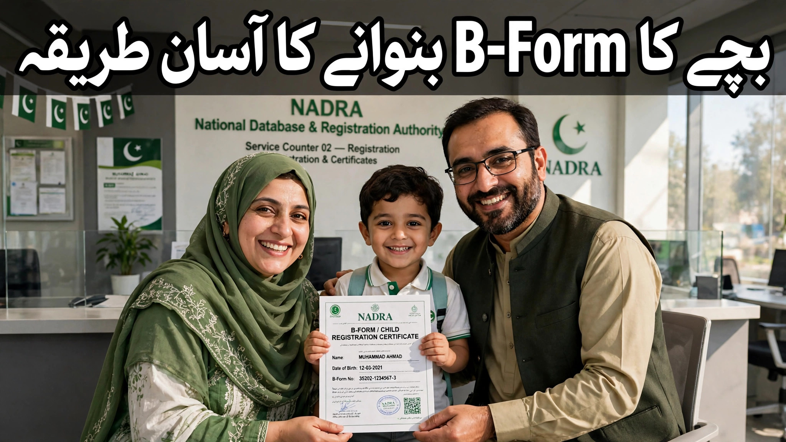

بچوں کا B-Form کیسے بنوائیں؟ — مکمل اردو گائیڈ

جب گھر میں بچے کی پیدائش ہوتی ہے تو خوشی کے ساتھ کئی ضروری کاغذی کارروائیاں بھی آتی ہیں — اور ان میں سب سے اہم ہے B-Form، یعنی بچے کا رجسٹریشن سرٹیفکیٹ۔ یہ وہ دستاویز ہے جو NADRA کی جانب سے 18 سال سے کم عمر کے بچوں کے لیے جاری کی جاتی ہے، اور اسکول میں داخلے، پاسپورٹ، شناختی کارڈ اور دیگر سرکاری کاموں کے لیے لازمی ہے۔ بہت سے والدین کو معلوم ہی نہیں ہوتا کہ B-Form کہاں سے، کیسے اور کن کاغذات کے ساتھ بنوانا ہے۔ اس مکمل رہنمائی میں ہم تمام مراحل، فیس اور عام غلطیوں کو آسان اردو میں بیان کر رہے ہیں۔
1۔ B-Form کیا ہے اور کیوں ضروری ہے؟
B-Form (چلڈرن رجسٹریشن سرٹیفکیٹ / CRC) NADRA کی جانب سے ہر بچے کی شناخت کی دستاویز ہے۔ یہ بچے کا نام، تاریخِ پیدائش، والدین کے نام اور ان کے شناختی کارڈ نمبرز درج کرتا ہے۔ جب بچہ 18 سال کا ہو جاتا ہے تو اسی B-Form کی بنیاد پر اس کا کمپیوٹرائزڈ شناختی کارڈ (CNIC) بنتا ہے۔ B-Form کے بغیر اسکول داخلہ، بورڈ کے امتحان، پاسپورٹ کا اجرا اور بہت سے سرکاری وظائف میں دشواری پیش آتی ہے۔ بچے کی پیدائش کے بعد جتنی جلدی ممکن ہو اس کا B-Form بنوا لینا بہترین عمل ہے۔
2۔ B-Form کن صورتوں میں لازمی ہے؟
عملی طور پر B-Form درج ذیل مواقع پر مانگا جاتا ہے:
- اسکول میں داخلہ: تقریباً ہر سرکاری اور نجی اسکول بچے کے داخلے کے وقت B-Form مانگتا ہے۔
- پاسپورٹ: بچے کا پاسپورٹ بنوانے کے لیے B-Form لازمی شرط ہے۔
- CNIC: 18 سال کی عمر میں پہلا شناختی کارڈ B-Form کی بنیاد پر جاری ہوتا ہے۔
- سرکاری مراعات: تعلیمی وظائف، احساس اور BISP جیسے پروگراموں میں اکثر B-Form درکار ہوتا ہے۔
- بیرونِ ملک سفر: خاندان کے ساتھ بیرون ملک سفر کے کاغذات میں بچے کا B-Form شامل ہوتا ہے۔
3۔ درکار دستاویزات
NADRA سینٹر جانے سے پہلے یہ کاغذات تیار رکھیں:
- بچے کی پیدائش کا سرٹیفکیٹ: یونین کونسل یا میونسپل کمیٹی سے جاری شدہ برتھ سرٹیفکیٹ (پاکستان میں بچے کی پیدائش پر یونین کونسل میں اندراج کرانا پہلا قدم ہے)۔
- والد کا شناختی کارڈ: والد کے اصل CNIC کی کاپی (بعض مراکز اصل کارڈ بھی دیکھتے ہیں)۔
- والدہ کا شناختی کارڈ: والدہ کے CNIC کی کاپی بھی لازمی ہے۔
- شادی کا نکاح نامہ: بعض صورتوں میں، خاص طور پر جب والدین کے نام کے اندراج میں فرق ہو، نکاح نامہ مانگا جا سکتا ہے۔
- بچے کی تصویر: بڑے بچوں کے لیے پاسپورٹ سائز تصویر درکار ہو سکتی ہے؛ نوزائیدہ بچوں کے لیے عام طور پر تصویر کی ضرورت نہیں ہوتی۔
4۔ درخواست کا قدم بہ قدم طریقہ
B-Form بنوانے کا عمل انتہائی سیدھا ہے:
- قدم 1: قریبی NADRA رجسٹریشن سینٹر (NRC) تشریف لے جائیں — بچے کے ساتھ جانا عام طور پر ضروری نہیں ہوتا، والدین میں سے کوئی ایک بھی درخواست دے سکتا ہے۔
- قدم 2: ٹوکن حاصل کریں اور اپنا نمبر آنے کا انتظار کریں۔
- قدم 3: کاؤنٹر پر دستاویزات جمع کرائیں اور فارم پر بچے کا نام، تاریخِ پیدائش اور والدین کی تفصیلات درج کروائیں۔
- قدم 4: فیس ادا کریں — فیس کی رسید ضرور سنبھال کر رکھیں۔
- قدم 5: ڈیٹا انٹری مکمل ہونے کے بعد آپ کو ایک رسید (ٹریکنگ نمبر کے ساتھ) دی جائے گی۔ B-Form مقررہ مدت کے بعد اسی سینٹر سے یا کوریئر کے ذریعے وصول کریں۔
5۔ فیس اور وقت
NADRA کی فیس شیڈول وقتاً فوقتاً تبدیل ہوتا ہے، لیکن عام طور پر B-Form کی نارمل فیس چند سو روپے کے قریب ہوتی ہے، جبکہ ارجنٹ کیٹیگری میں فیس زیادہ ہوتی ہے اور دستاویز جلد مل جاتی ہے۔ فیس ہمیشہ NADRA کے مقررہ کاؤنٹر یا بینک کے ذریعے ادا کریں — کسی ایجنٹ یا باہر کھڑے شخص کو اضافی رقم دے کر \"تیز کام\" کا جھانسہ نہ کھائیں۔ موجودہ فیس کی تصدیق کے لیے درخواست سے پہلے NADRA کی ویب سائٹ یا ہیلپ لائن پر رابطہ کر لیں۔
6۔ B-Form کی ٹریکنگ کیسے کریں؟
درخواست کے بعد ملنے والی رسید پر ایک ٹریکنگ نمبر درج ہوتا ہے۔ اس نمبر سے آپ NADRA کی ویب سائٹ یا ہیلپ لائن کے ذریعے درخواست کی حیثیت معلوم کر سکتے ہیں۔ مقررہ تاریخ کے بعد متعلقہ NADRA سینٹر سے دستاویز وصول کریں اور وہیں بیٹھ کر نام کی اسپیلنگ اور تاریخِ پیدائش چیک کر لیں — بعد میں اصلاح کا عمل الگ سے کرنا پڑتا ہے۔
7۔ نام یا تاریخ میں غلطی ہو تو کیا کریں؟
اگر B-Form پر نام کی اسپیلنگ یا تاریخِ پیدائش غلط آ جائے تو NADRA سینٹر سے \"ڈیٹا اصلاح\" (data modification) کی درخواست دی جا سکتی ہے۔ اس کے لیے اصل برتھ سرٹیفکیٹ اور والدین کے شناختی کارڈ درکار ہوتے ہیں۔ اصلاح کی فیس الگ سے ادا کرنی پڑتی ہے۔ یاد رکھیں: بعد میں اصلاح کروانے سے بہتر ہے کہ درخواست کے وقت ہی تمام تفصیلات دو بار چیک کرائیں۔
8۔ ڈپلیکیٹ B-Form کیسے حاصل کریں؟
اگر B-Form گم ہو جائے یا خراب ہو جائے تو پریشان ہونے کی ضرورت نہیں — NADRA سینٹر سے ڈپلیکیٹ جاری کروایا جا سکتا ہے۔ اس کے لیے والدین میں سے کسی ایک کا شناختی کارڈ اور بچے کی بنیادی تفصیلات (نام، تاریخِ پیدائش) کافی ہوتی ہیں، کیونکہ ریکارڈ NADRA کے سسٹم میں پہلے سے موجود ہوتا ہے۔ ڈپلیکیٹ کی فیس نارمل درخواست سے کچھ زیادہ ہو سکتی ہے۔
9۔ آپ کا عملی چیک لسٹ
اس مختصر فہرست کو پرنٹ کر کے یا موبائل میں محفوظ کر کے رکھیں: پہلے — یونین کونسل سے برتھ سرٹیفکیٹ حاصل کریں اور نام/تاریخ درست چیک کریں۔ دوسرا — والدین دونوں کے CNIC کی کاپیاں تیار رکھیں۔ تیسرا — قریبی NADRA سینٹر جائیں، ٹوکن لیں، فارم جمع کرائیں اور فیس ادا کریں۔ چوتھا — رسید سنبھالیں اور مقررہ تاریخ پر B-Form وصول کر کے وہیں تفصیلات چیک کریں۔ یہ چار قدم مکمل ہوتے ہی آپ کے بچے کی شناخت کا مستند دستاویز آپ کے ہاتھ میں ہوگا — اور مستقبل کے ہر سرکاری کام میں آسانی رہے گی۔